狂欢The Carnivalesque
2011 年 M Art Center 个展A Solo Exhibition by Feng Shuo at M Art Center
冯硕作品中的动物到底是什么？他们是带着动物面具的人吗？还是神奇地变成了人的动物？那群拱在一起坏笑着的猪，那排立在桌边的猫头鹰，钓鱼的大熊猫，他们为什么在那里？他们要做什么？那些游荡在画中的孩子们，还有的带着翅膀，他们是天使还是灵魂，或者只是群捣乱的顽童？无疑，我们在观看一个冯硕制造出来的假想世界，而要想走进这个世界，搞懂这个世界，我们得先从画的表面开始，从冯硕绘画的独特方法进入。
上世纪八十年代在欧洲艺术史上是绘画回归的年代，在之前十几年已被宣告死亡灭绝的绘画不但茁壮地恢复了元气， 而且它绝不是死魂复活，绘画是以一种更强有力的姿态和更离奇的具像重返人间的。英国的 Christopher Le Brun ，法国的 Judit Reigl 就是这样两个代表。他们的绘画在抽象和具象的转辗中，Le Brun的密集的线条中不断出现的是马的形象，Reigl是反复画人。在他们的作品中绘画的颜料本身被赋予了生命，就如神话中说的上帝吹口气将泥土变成人一样。颜料如滋养生命的土壤，即使关于绘画所承载的真实性也在过去十几年中不断被质疑，艺术家们还是一如既往，用颜料绘画出形象：人物、动物、天使、恶魔，
上世纪末，还有一些艺术家是以他们作品中矛盾和低哑的讽刺创出名声的，比如我们该如何看 Sigmar Polke 画的魔术师和魔鬼呢？是寓言还是玩笑？是全能艺术的终极结果还是一个艺术的阴谋？是戏剧还是反讽？还有Kippenberger “说的“亲爱的画家，画我吧！”真地只是艺术家在开玩笑吗？Keppenberger竭力否认自己作品中的严肃性， 可他作品中的严肃性，甚至是带着悲剧感的严肃性，我们又怎能回避呢？
同样的，在我们看冯硕的作品时，我们是在看悲剧还是喜剧呢？或是悲喜交加的滑稽剧？冯硕画的表面看去象是还没有完成的涂抹，就像小孩子在一枚硬币上蒙上白纸，用铅笔在白纸上反复涂抹，硬币上的图案会浮现出来，如果是在英国，硬币的一面涂出来的是女王的侧面象，而另外一面是同神话有关的象征。看冯硕的画也象是坐在被冰封了车窗的火车里朝外看风景，我们得使劲地把车窗上的冰霜抹掉才能朝外窥视。抹去擦掉后再现的是我们这个世界之外的世界，一个我们都属于的世界，只是我们对它的了解支离破碎，它在我们的意识中时隐时现。
冯硕用颜料给我们塑造了一个奇异的世界，在这个世界里动物可以说话，唯一和人类有关的是那些流窜在画里的毛头小孩们。我们好像在看一本儿童图画书：我们可以清楚地体会书里童话世界的稚气，但那故意制造的粗野感和肮脏气息让我们很吃得准书里的气氛。在2006年的作品《最后的晚餐》中，我们在一群挤在桌子边的猫头鹰和老鼠前面，看到被肢解了的孩子或是布娃娃的部件。这是一个狂欢的世界，在这里正常的社会秩序被彻底颠覆，动物驾驭于人类之上，主子为仆人服务。在纵情狂欢的夜里，人们戴上面具，放歌纵酒，秉烛夜游，通宵达旦。而当黎明到来一切恢复正常的时候，人们精神饱满，高高兴兴地去做他们平时该做的事情。在没有狂欢的地方，这种欢纵的情绪就只有通过艺术来表达了。
在冯硕的狂欢作品中，没有人需要带动物的面具，这里动物本身在扮演着人类。很显然，冯硕在给我们讲寓言，通过这些寓言他在点评我们的生活。在冯硕的动物寓言世界里，我们在倾听动物的智慧，我们 ——至少是孩子们，同它们和谐相处。而在真实的世界里，我们把动物当做盘中的食物或是动物园的观赏物，屠宰生灵，囚禁动物，这是我们人类的专利。
而正是冯硕作品中的颜料和颜料被涂抹的方法制造出了动物的生机和他们接近人类的个性。毕竟，用颜料绘画是一种人类的行为，而非动物所能。我们也可以说就因为冯硕所绘画的内容， 这些在画面中处在狂欢中的动物和小孩儿，让他能够自由地画下去，去画这些画儿本身就是去纵酒欢歌的狂欢。
英国艺评家Andrian Stokes 曾经指出绘画同雕塑一样都是在塑造和刻划，强调的就是塑造性和控制性。不同艺术家用不同的方式，冯硕显然是个塑造模型的艺术家，他的画面表层象被泥水包浆过又被重塑的，对于一个雕工来说，作品的完成是关键。而对一个造模型的人，制造本身是给作品注入生命的过程。在冯硕笔下，当中心形象有了足够的生命力时，他就不再理会清理作品的周边和角落，所有那些围绕着中心形象的边角都是对在正在创作中的艺术家的干扰，这也就是为什么冯硕的作品中每一个笔刷都清清白白。
在这里，我们可以把冯硕的创作看做是一件正在发生的事件，那些画布周边没有着色的边就是在强调这样的事实，绘画本身就是这样一件正在发生的事，当我们的感知被这事件的戏剧化调动起来，也同时参与到这事件当中的时候， 这就是艺术的狂欢。
What and who are these animals we have seen in Feng Shuo’s paintings over the past few years? Were these people masquerading as animals or animals that had miraculously become people? Those owls or pigs that sat at the table, that giant panda fishing – how did they come to be there? What did they mean? Those children that wander through his paintings, sometimes with wings attached, were they angels or sprites, or just kids mucking about? Clearly this was an imaginative world he has created, or given birth to, but to understand what it might mean we must begin with the surface, with the very particular way it has been painted.
At the tipping point in Europe when painting returned in the early Eighties after a decade and a half of being told it was extinct, it returned not as a ghost but replete with energetic gestures and strange figures. Many artists, Christopher Le Brun in England and Judit Reigl in France are just two examples, had found the figure returning of its own accord in the to and fro of making abstract paint marks. For Le Brun it was the figure of a horse that repeatedly emerged out of a mesh of lines, for Reigl the figure of a man. There was a sense then of paint being a primal material from which life could be coaxed – just as in many early myths the gods created human life by blowing into clay or mud. We may have grown more ironic in subsequent decades about the truth-telling capacity of paint, but its fertility, the way as a material paint seems to call for the invention and making of figures, animal, people, demons and angels, is undisputed
Other artists who gained greater prominence as the century sputtered to an end were more ambivalent or ironic about their paintings: we do not know how seriously to take Polke’s pictures of magicians and the devil. Allegory or joke? Is his play with alchemy a revelation or a fraud? Is it a real drama or a parodist’s re-enactment? With an artist such as Kippenberger – “dear painter, please paint me” – the dramas he created were burlesques, games. But behind the rumbustious joking and his apparent refusal to be serious we detect seriousness – even tragedy.
Similarly, when we look at the paintings of Feng Shuo is it tragedy or comedy that we see? or tragico-comical farce? The surface of his paintings has often been like that of an unfinished rubbing: just as when as children we put paper over a coin and rubbed a pencil across to make an impression of the central image – in England this would be the queen’s head and on the reverse of the coin some allegorical symbol. Or it is like being in a train with misted up windows that one has to rub with one’s sleeve to see out of. One rubs away to let the image appear, giving one a glimpse of some strange scene that has so far gone on unseen. It is a world outside our world yet one belonging to it – we see it only indistinctly and in fragmented form.
If paint is some primal material, or genetic soup, then in these paintings by Feng Shuo it has given birth to a strange world, a world turned on its head where animals talk and the only people in sight are young children. It might remind us of a children’s illustrated book – where anthropomorphism is so prevalent- but the mood is far more uncertain, indeed potentially savage and nasty. In one early painting do we see a doll or a child dismembered and half eaten on a table where owls and mice sit? This is the world of carnival where normal rules no longer apply, where the normal hierarchies are inverted, where animals pursue people, where the master serve the servants and the ridiculous rules. Carnival – long extinct in England but still thriving elsewhere in Europe – is where people once a year don masks so they can say whatever they want and act however they want. They stay up late, do not go to work, drink too much, play music loudly. But the next day they return to work and normality, refreshed and happier. In a place where such a carnival no longer exists it emerges in art as the carnivalesque.
In paintings of the carnivalesque such as Feng Shuo’s no-one needs to wear animal masks: the animals can act as if they were people. This is Liberty Hall. Inevitably, of course, we read it as allegory, as a way of commenting on our way of life. In the world of these paintings it seems we listen to the wisdom of animals; we co-exist with them – or at least the children can. In the real world we just eat animals or gawp at them in zoos.
It is the paint or the way paint is applied that gives these animals vitality and their quasi-human character. (Paint is a human thing, animals don’t make it.) Alternatively, we can say that these scenes allow Feng Shuo to paint freely. These animals and children in their carnivalesque world allow him the freedom to paint. The very act of painting in these paintings is carnivalesque.
The English art critic Adrian Stokes once remarked that painting like sculpture was either modelled or carved, the emphasis being on either building thing up or controlling them. The different approaches defined different personalities. Feng Shuo is clearly a modeller: the surface looks like mud whipped into shape or modelling clay. For the carver completion is critical, but for the modeller the act of making, giving birth to life is what matters. If there is sufficient vitality or life in the central images there is no need to tidy up or complete the corners and sides. Indeed it would distract from that moment of “birth”. It is crucial here that the brushmarks are visible, so “up-front”.
One could say that the painting here is an event. The way the canvas has been left bare at the edges has often emphasised that fact. The drama that is played out and the act of painting can only emerge simultaneously. Eventually our recognition of what is going on and our involvement seems to happen simultaneously as well. This moment when all happens together is the moment of carnival.
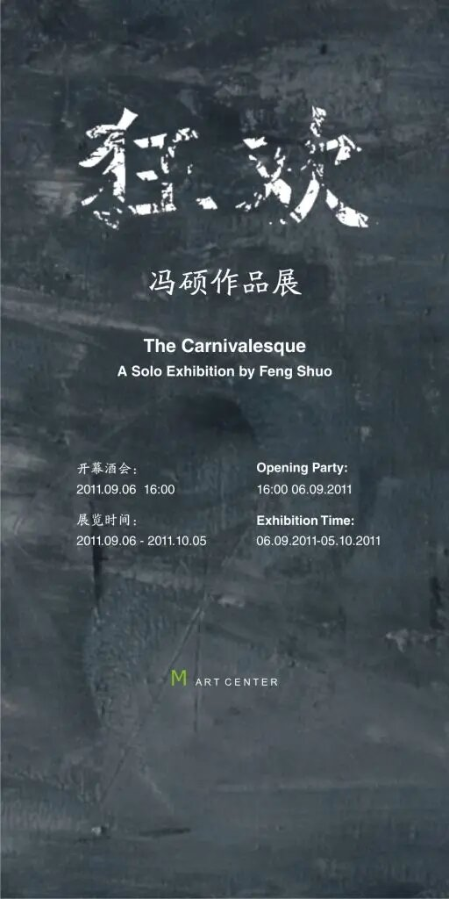
展出作品Works in the exhibition
展览现场Installation views
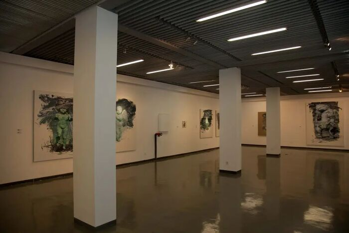
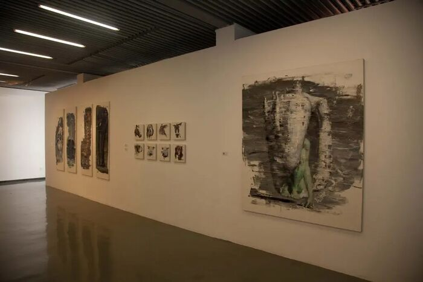
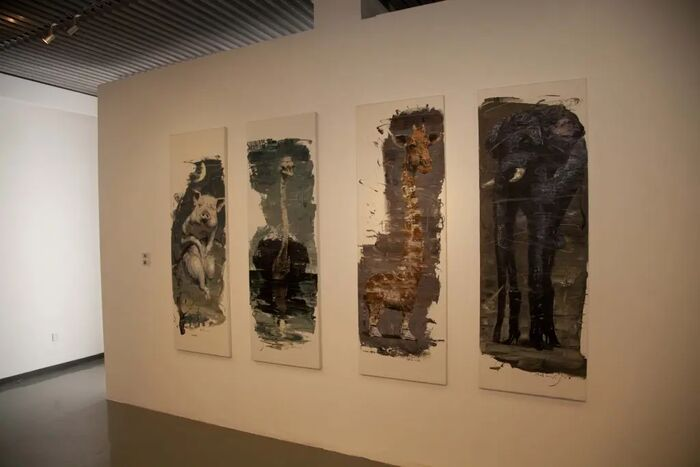
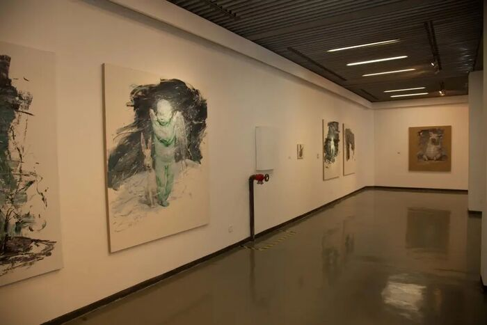
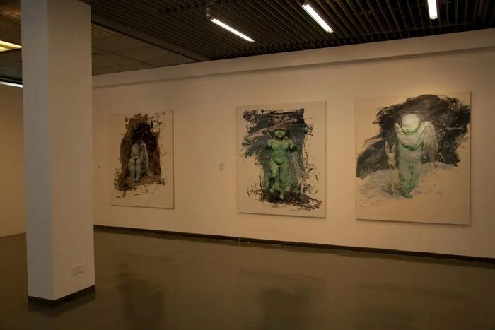
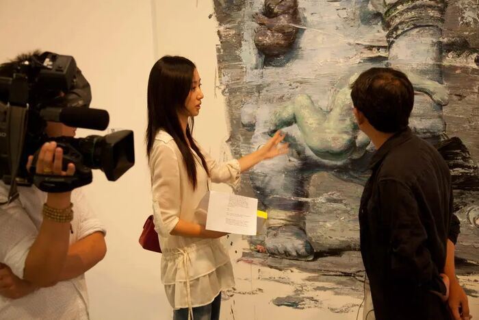
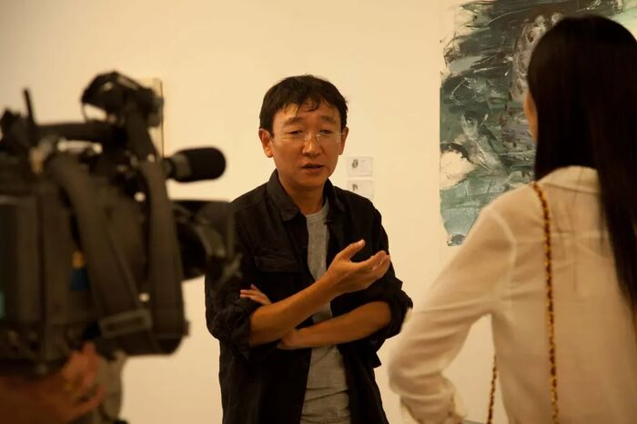
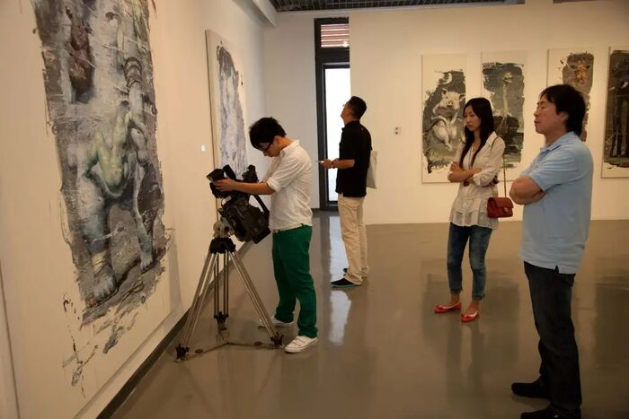
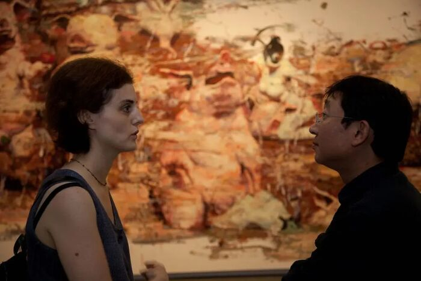
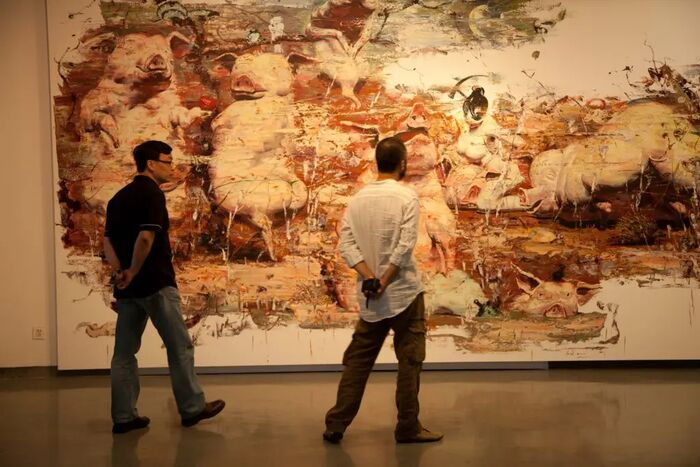
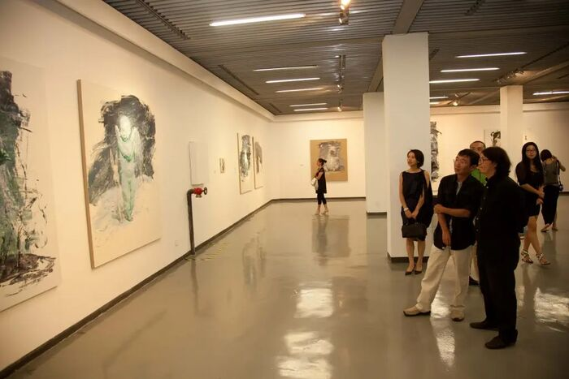
© Tony Godfrey 2011 中文翻译：王凯梅 图片来源：fengshuo.cc 原始站点存档